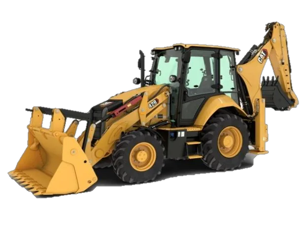
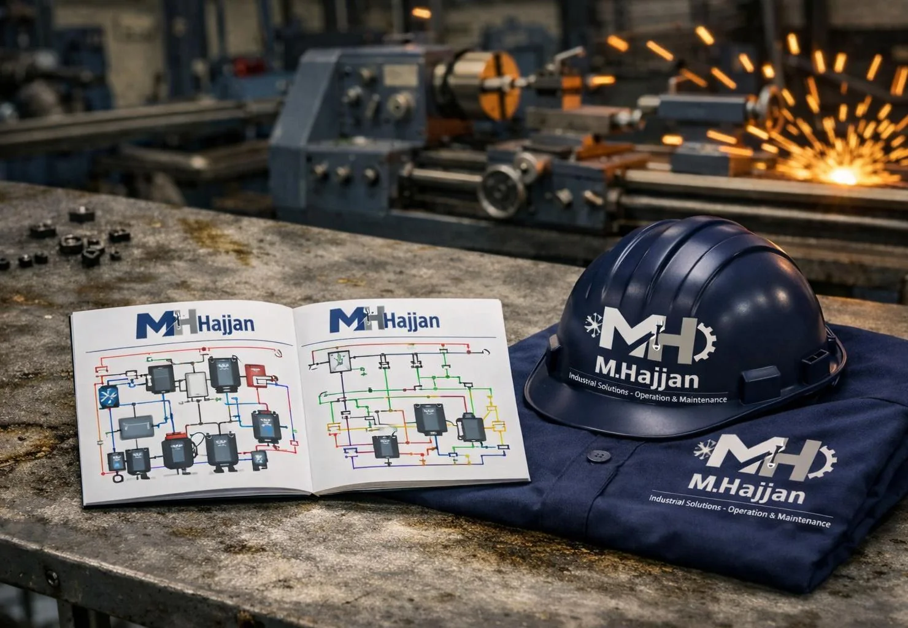

Industries
Support shaped around real operating environments.
Hajjanco connects relevant equipment, service, training and parts capabilities for the industries it supports.

01 · INDUSTRY
Ready-Mix Concrete
Integrated support across batching plants, truck mixers, pumps, placing systems, maintenance, training and spare parts.
Batching PlantsTruck MixersConcrete PumpsPlant Parts

02 · INDUSTRY
Construction
Equipment, component sourcing and technical support for construction companies and project sites.
Heavy EquipmentHigh-Rise SystemsMaintenanceParts

03 · INDUSTRY
Industrial Plants
Maintenance, machinery, technical training and replacement-component support focused on operational continuity.
OperationsPreventive MaintenanceMachineryTraining

04 · INDUSTRY
Cooling & Refrigeration
Supply, installation, maintenance and spare-parts support for cooling systems and refrigeration rooms.
ChillersIce PlantsRefrigeration RoomsHVAC Parts

05 · INDUSTRY
Infrastructure
Industrial and construction equipment solutions for essential projects requiring dependable supply and technical support.
Construction EquipmentConcrete SystemsTechnical SupportParts